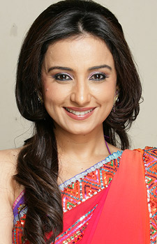

Star Cast
-
 Shah Rukh Khan as Veer
Shah Rukh Khan as Veer - Preity Zinta as Zaara
- Divya Dutta as Shabbo
- Rani Mukerji as Saamiya
Veer-Zaara is a 2004 Indian romantic drama film directed by Yash Chopra under the Yash Raj Films banner. The film stars Shah Rukh Khan and Preity Zinta in the leading roles, with Rani Mukerji, Manoj Bajpayee, Kirron Kher, Divya Dutta and Anupam Kher in supporting roles. Veteran actors Amitabh Bachchan and Hema Malini make a special appearance in the film. The film's story and dialogues were written by Aditya Chopra.
Set against the backdrop of conflict between India and Pakistan, this star-crossed romance follows the unfortunate love story of an Indian Air Force pilot, Squadron Leader Veer Pratap Singh and a Pakistani woman hailing from a rich political family of Lahore, Zaara Hayat Khan, who are separated for 22 years. Saamiya Siddiqui, a Pakistani lawyer, finds Veer in prison and upon listening to his story, tries to get him freed.
Shah Rukh Khan as Veer ★★★★★
Veer Zaara is a story of epic proportions which shows the deepest insight into the understanding of love as it applies to the human experience. Terrors, along with joys, test the bonds of two lovers of different faiths, different nationalities, but similar feelings. These feelings reflect upon the plot so brilliantly, making this movie Shah Rukh Khan's second best performance, following behind Kal Ho Naa Ho. The Late Madan Mohan has composed brilliant songs which shed light on the journeys of the two star crossed lovers, highlighting both comical and tragic moments in this classic saga. As for Veer Zaara's influence on the public, a motif of unity, an archetype of love in the hero's garden is shared with the two nations, creating a bond forged in steel. This is something Shakespeare should have seen.
★★★★★
i don't know very well about the special relations between indians and pakistans but i can tell u this was the most beautiful movie i ever saw . the perfection that take place in the movie ,the music which suits so well to each act it been play , the excellent actors all that made me cry my friends and i don't cry in movies.... so simple , so beautiful i don't know anybody who don't dream about one love like this one love .... for one life. i didn't expect so much from an unknown director and i was surprised , i love this culture i love the simple people of India and Pakistan which are so well describe , painted in the movie and the beautiful woman of both country ....
★★★★★
It was a really spectacular movie! I think the cinematography, music, colour, acting and 'second to none' story were instrumental in it being, I am sure, one of the best of its time. "Hats off" to Chopra and his team for directing yet another masterpiece! I must have this on DVD to add to my aspiring collection of movies. I couldn't believe that the movie did not waste time, with the usual 'Tun Tun' characters, which I must say, are displayed really well sometimes. The movie progressed smoothly, from one Scene to the next backed by superb and riveting music. I saw the movie this weekend (couldn't go before due to Diwali and Eid-ul-Fitr celebrations) and will return to the cinema this coming weekend to view it yet again! I think the movie had a 'Dilwale....' kind of feeling to it linked, perhaps, to the rural, peasant farming, outdoor field type of setting. I was truly pleased to see a movie linked to the India/Pakistan conflict, to be devoid of fighting and bloodshed! The movie addressed some of the more delicate issues of this conflict and must say that it was done in the most professional way!....Great movie....I give it five(5) stars